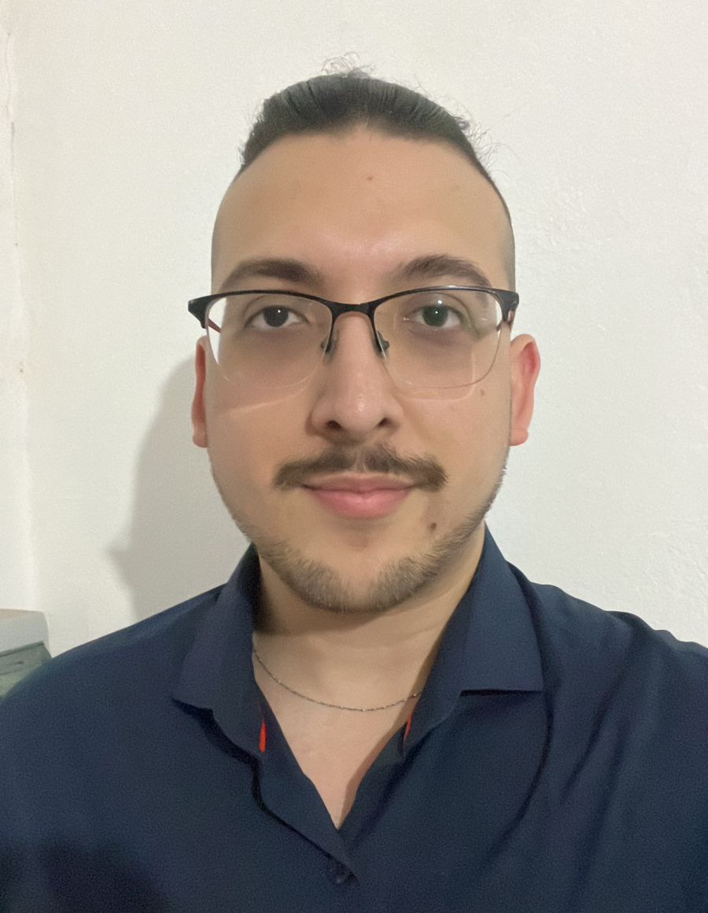
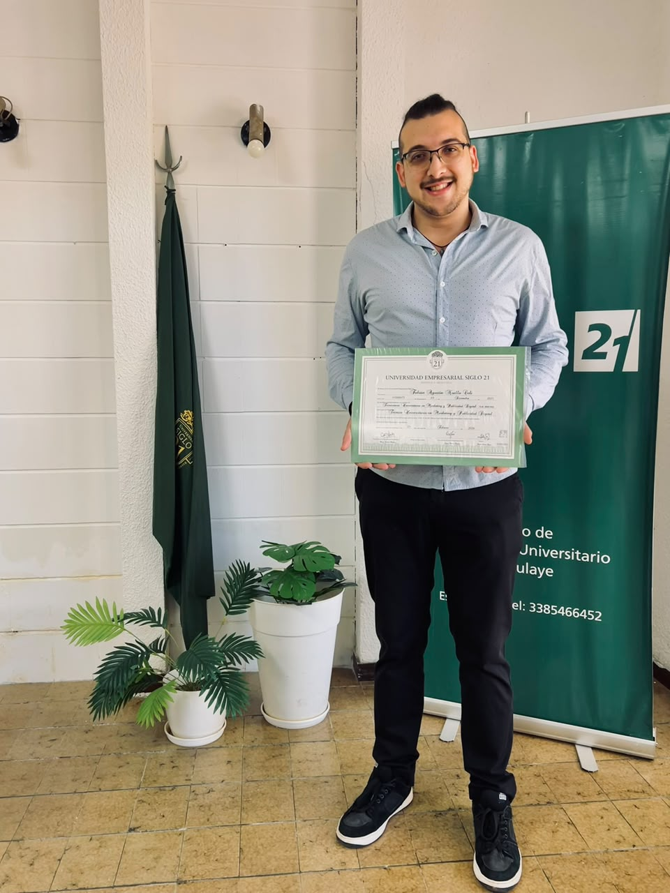
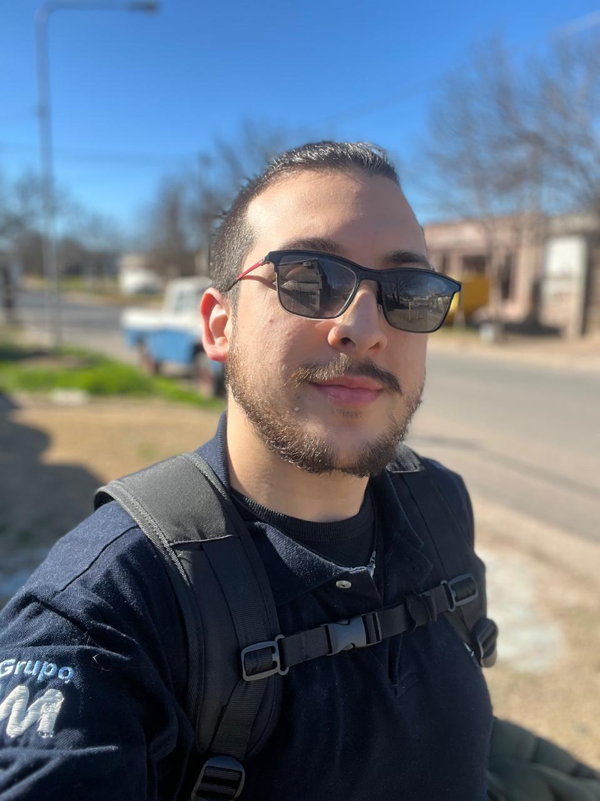
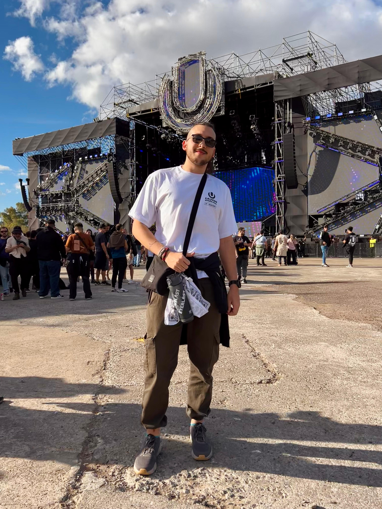

PROYECTO 01 · EMPRENDIMIENTO
Doctor Celular
Desarrollo de identidad de marca y comunicación digital para un servicio de reparación de dispositivos móviles.
Soy Fabián Agustín Noello Celi, Técnico Universitario en Marketing y Publicidad Digital. Me interesa conectar marcas con personas a través de la creatividad, la comunicación y la estrategia digital.





Soy Técnico Universitario en Marketing y Publicidad Digital. Me formé en planificación de estrategias, comunicación de marca, publicidad y herramientas digitales. Disfruto transformar objetivos de negocio en acciones concretas, comprender al público y crear mensajes que generen conexión.
Combino mi formación académica con experiencia práctica en el desarrollo y la comunicación de un emprendimiento propio. Busco seguir creciendo en equipos de marketing, comunicación o publicidad, aportando iniciativa, creatividad y compromiso.
Una selección de experiencias académicas y prácticas. Cada caso se puede ampliar con piezas gráficas, objetivos, proceso y resultados verificables.
Desarrollo de identidad de marca y comunicación digital para un servicio de reparación de dispositivos móviles.
Proyecto académico de marketing y comunicación enfocado en el análisis de una organización y sus oportunidades de comunicación.
Proyecto académico para trabajar el posicionamiento de una propuesta de marca y el desarrollo de acciones de marketing.
Herramientas que utilizo para desarrollar proyectos, crear contenido y trabajar en el entorno digital.
Edición y retoque de imágenes, composición y diseño gráfico.
Diseño de piezas gráficas, presentaciones y contenido digital.
Edición de videos y creación de contenido audiovisual.

Conocimientos iniciales de publicidad y campañas digitales.

Familiarización con analítica y medición digital.
Elaboración de documentos, presentaciones y hojas de cálculo.
Productividad, organización y trabajo colaborativo.
Edición de código y desarrollo de páginas web con HTML y CSS.
Conocimientos y áreas que podemos detallar según tu nivel y experiencia real.
Estoy abierto a oportunidades laborales y proyectos vinculados al marketing, la comunicación y la publicidad digital.
Fabián Agustín Noello Celi
Rosario, Santa Fe, Argentina
agunoello@gmail.com
+54 9 3385 550292